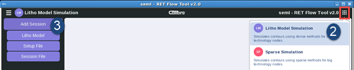

Create a Litho Model session using a litho
model (LM) or global litho model (GLM), a setup file, or load a
previously saved session.
Procedure
- Open the
Calibre RFT v2.0 GUI.
- Click the
mode selection button in the upper right corner (red box in the
figure), then select Litho Model Simulation as
the session type.
Figure 1. Open
LM Simulation Session Using a Litho Model
- Hover your
cursor over Add Session. The list of available
session loading commands appears. Select an item from the list:
Litho Model —
Loads a litho model from the disk.
Session File —
Loads a previously-saved litho model session file.
Setup File —
Loads a previously-saved setup file.
- Navigate
to the appropriate file, then click Choose.
Results
The selected item is loaded into the Calibre RFT v2.0 GUI. The
new session is named using the name of the litho model or global
litho model you loaded.
If you are loading a litho model, you must perform additional
configuration tasks, as described in “Configuring the LM Process Management Section”.